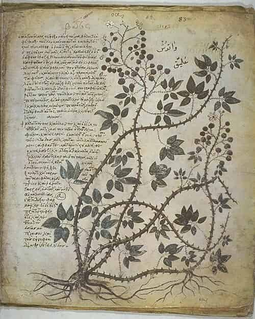
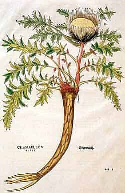
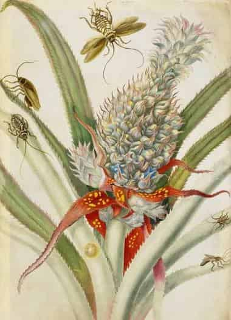
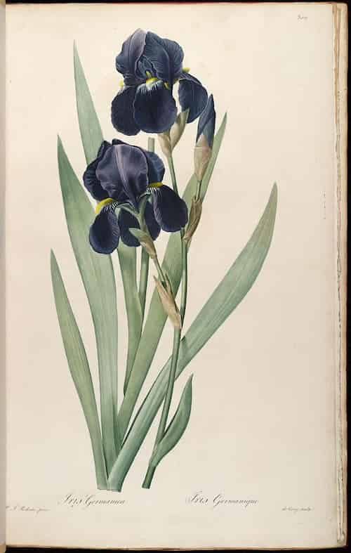
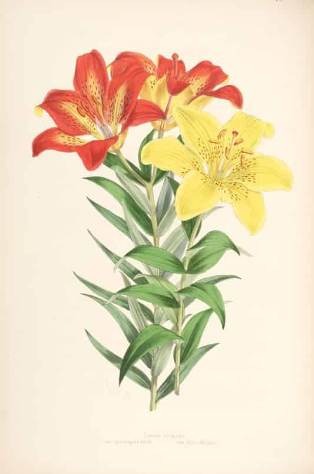

The History of Botanical Illustrations
Botanical illustration has a long history that connects art, medicine, and science. For centuries, people have used drawings of plants to identify species, document their properties, and better understand the natural world. As scientific knowledge and artistic techniques developed, botanical illustration became increasingly detailed and accurate.

Before the 15th Century
Early Plant Illustrations
Some of the earliest botanical illustrations appeared in medical books and herbals. These drawings were primarily created to help people identify plants used for medicinal purposes.
One of the oldest surviving illustrated botanical manuscripts is the Vienna Dioscurides, created around 512 CE. It contained illustrations of plants alongside descriptions of their medicinal uses. However, many early illustrations were stylized rather than scientifically accurate, which sometimes made identifying plants difficult.

15th–16th Centuries
The Development of Scientific Illustration
During the Renaissance, botanical illustration began moving toward greater scientific accuracy. Artists increasingly studied living plants instead of copying illustrations from older books.
The invention and spread of the printing press also made botanical knowledge more accessible. Books could be reproduced and distributed to a much wider audience.
One influential publication was Leonhart Fuchs's De historia stirpium (1542), which featured detailed illustrations of plants, including their roots, leaves, flowers, and fruits. These illustrations helped readers identify plants more accurately.

17th Century
Art and Science Expand
By the 17th century, botanical illustration had become increasingly popular among scientists, collectors, and artists. European exploration introduced new plant species, creating greater interest in documenting and studying unfamiliar plants.
Illustrations also began showing more than just individual plants. Artists such as Maria Sibylla Merian included insects and their relationships with plants, connecting botanical art with the study of other living organisms.
During this period, botanical illustrations served both scientific and decorative purposes, appearing in scientific books as well as collections created for wealthy plant enthusiasts.

18th Century
Scientific Classification and New Techniques
The 18th century brought major developments in the scientific study of plants. Carl Linnaeus introduced a system of naming and classifying plants that helped establish modern botanical taxonomy.
As scientists worked to organize and identify plant species, accurate illustrations became increasingly important. Artists created detailed images that highlighted specific plant structures and characteristics.
One of the most famous botanical artists of this period was Pierre-Joseph Redouté, known for his detailed and colorful paintings of flowers, particularly roses. Improvements in color printing also allowed botanical illustrations to reach larger audiences.

19th Century
The Golden Age of Botanical Illustration
The 19th century is often considered a golden age of botanical illustration. Advances in printing technology made it possible to reproduce detailed, colorful images on a much larger scale.
Botanical magazines, plant catalogs, and scientific publications became increasingly popular. Illustrations were especially important for documenting newly discovered species and sharing botanical knowledge.
Artists such as Walter Hood Fitch became well known for their detailed illustrations, particularly of orchids. Anna Atkins also introduced a new approach by using cyanotype photography to document algae, combining scientific observation with emerging photographic technology.
